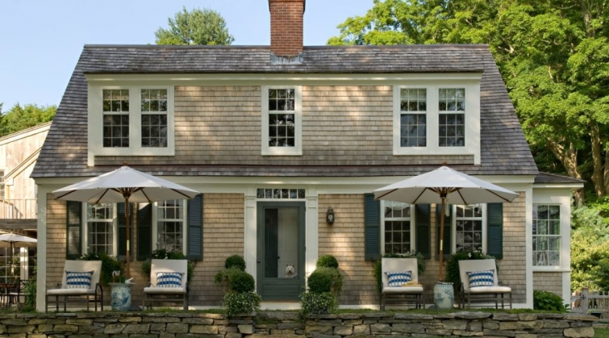

.png)
.PNG)
.PNG)
.PNG)
.PNG)
.PNG)
.JPG)
.JPG)
.PNG)
.PNG)


source
Last week we looked at an inn whose rooms were designed by Barbara Bradley Baekgaard, (a co-founder of Vera Bradley) and we talked about her fearless use of pattern and color. Today I would like to share some of the work of Cathy Kincaid Hudson with you because she, too, seems to be fearless in her use of pattern and color.
A lot of her work is more formal than my usual taste, but there are a number of more casual spaces she has designed that I love. The kitchen below (from the house above) is a bit more subdued in pattern than some of her other kitchens, but there is still the mix there…old mixed with new, pattern mixed with solid… all making for a charming room. 🙂
And the bedroom below is also in the same home from the top of the post. It has a great mix of rustic with refined.
I’ve noticed that she has used a tan plaid or check in several of the spaces that appeal to me.
There they are again in the cute cute bedroom below. 🙂
The mix of patterns in the next bedroom works so well because she has kept them in the same color family….the stripe, paisley, and small scale print…all blue. What a relaxing looking room!
Wouldn’t you just love to have a pantry like this one? 🙂 (I am trying so very hard to make myself not like wallpaper, but when I see spaces like this it is difficult to resist!)
Alright now, get ready for some pattern. 🙂
Here is a more formal space she did with a large scale pattern on the chairs.
And now we are really seeing her brave mix in this next bedroom.
All the different patterns play nicely together in this room because they each have that rosy red color in them.
And although the dining room color scheme is more subdued, it too has a number of patterns playing together.
(Be sure to look at the cushions on the chairs. 🙂 )
The last piece of eye candy I want you to see is this kitchen from the 2003 Southern Accents Showhouse located in Dallas. Cathy Kincaid Interiors did the entire house- over 10,000 square feet! Again there is a great mix here…rustic with refined, old with new, and a nice use of a variety of patterns and colors in the textiles.

And now that you have seen some of her work, let me tell you a little about Cathy Kincaid Hudson. She received her Bachelor’s degree in interior design from Texas Christian University in Fort Worth and interned under Joseph Minton at the Fort Worth firm of Minton & Crowley. If you aren’t familiar with Joseph Minton’s name, let me just show you one space of his (my favorite 🙂 ) from the very last Southern Accents Showhouse that sadly never made it to print. (There is a short video tour of this room here.) Doesn’t this look like a room Cathy Kincaid might have done?
She started Cathy Kincaid Interiors in 1978 in Dallas has been decorating homes for over 35 years. In fact, her firm was awarded Best Decorators in Dallas in 2007. She believes in using the best of whatever you can afford when creating a space – even if it means the space is sparse for awhile. Quality matters, and from looking at her work, I would say attention to detail also matters. She enjoys spending time with her children, grandchildren, pets, and friends.
I hope you have enjoyed seeing some of her work. If you will click through the links below the photos, you will be able to see even more!
Enjoy the rest of your week. 🙂


.PNG)
Love that first picture and I would be definitely enjoy a gorgeous kitchen like that. That bedroom with the three single beds is my favorite.
———————————————————————
Wasn’t that bedroom just the cutest thing?!Thank you for reading and always leaving such nice comments Debra.
Kelly
One of my favorite designers. Her work is so layered and cozy. Absolutely love the pictures you posted!!
———————————————————————-
Layered and cozy…describes her work perfectly!
Kelly
Kelly, when you mention the different prints together in the fabrics you are observing what quilting is to most quilters. It works as long as you don’t go overboard, the value of the colors in the varied prints, plaids, dots, etc are the same. Thank you for sharing this post with us.
When I was a young girl we didn’t mix blue and green. Look at it today. IF the value works the colors work.
Rencently I read where you said something about a dot with the plaids in your home. If it is the same value in color it works.
I have a pet peeve of not using white/white with ecru or beige.
Buy a small swatch of a dot fabric in the same value and pin it to your drapes and observe it there for a day and see what I am saying isn’t correct. HA! HA! We have to encourage you to try NEW things also.
———————————————————————-
You are so right Nan. It is the value of the colors in the patterns. I will try what you said with the polka dot fabric. Yes, I need to be more brave! 🙂
Kelly
Kelly,
I love her work and as usual, the rooms you selected are all rooms I could be very comfortable in. I will definitely visit the link and look at some more of her magic with rooms.
xo,
Karen
——————————————————————–
You will find many rooms you love there Karen. She does beautiful work that is timeless.
Kelly
Just Beautiful!
——————————————————————
I agree!
Kelly
Thanks for the tour. I loved the tan checks as well! I have some in my den! I loved the first kitchen. I like subdued. I’m to much on a lot of patterns. Too busy for my A.D.D..No wall paper for me! Just took some boarder down and that was a job. 😉
————————————————————————
I hadn’t thought about ADD with wallpaper. You are right, the busy-ness of it all could be a problem!
Kelly
I knew that kitchen looked familiar. I toured the Southern Accents showhouse. The entire house was gorgeous. My #1 is a TCU grad as well! Great post!
———————————————————————-
Lucky you getting to tour that showhouse! I know that had to a sight to see! Hope you took a lot of pictures Katie. 🙂
Kelly
Love the rooms since I’m an Anglophile at heart though the traditional style is not “where I live” I appreciate her style. Kelly, I’m with you on the wallpaper issue. I’ve got my heels dug in and I’ve taken a stand–no wallpaper. Yes, I’m finding it attractive but it’s not as easy to change as just re-painting. And after the investment of money, time, and work to get it up one also has to deal with issue of styles change.
Kelly, thanks for all you do.
————————————————————————
I keep saying no to wallpaper, but it is becoming increasingly difficult to resist when you see such beautiful patterns. When I feel weak, I will have to have you give me therapy. LOL
Kelly
You know I love these rooms!
———————————————————————-
Oh yes, these are definitely “your”kind of rooms, Kim!
Kelly
Truly enjoyed seeing her work! Just fasinating how she pulls everything together and the calming effect the rooms seem to elude. Just wondering how you find these great designers? Magazines, online, research? Thank you for sharing all these talented folks!! Did you ever study design? Seems like I remember reading that you did? Think you’ll ever return to it after hanging up your chalk?
———————————————————————–
Research…lots of research. No, I have a business degree in accounting and an education degree…no design course. Who knows what I will do when I retire….full time blogging is my first choice. 🙂
Kelly
Love, love, love her work. Very English. I’m not quite so formal, either (I live in a log cabin, after all), but I love her mix of antiques and rustic but elegant materials. That first kitchen is one I’ve had in my favorites. Thanks for featuring her.
—————————————————————–
She does such a beautiful job mixing things doesn’t she Carolyn? Glad you enjoyed all the eye candy.
Kelly
I have so many of these photos pinned I can’t tell you!! Love her work!
——————————————————————–
So glad you liked the photos Cindy. She certainly designs beautiful rooms.
Kelly
What beautiful rooms!!!!! All in all though, my favorite pic is the one of her family and that precious chubby checked grandchild! Happy Thursday!
——————————————————————–
Wasn’t that just the sweetest family photo? Loved it. 🙂
Kelly
I was preparing myself for something wild with her mix of patterns but was pleasantly surprised that it was toned down and all went well together. I have seen some blogs where it is so busy with patterns that it is overwhelming and hard to follow or appreciate. My decorating is so bland that I could use someone like her.
———————————————————————
She really thinks about the elements that she mixes so that they do “play well” together. I need to be more brave too. I know exactly what you are talking about in rooms that are too busy with patterns, and I certainly don’t want that to be the look here.
Kelly
That was fun. The style is so much the way my husband’s aunt’s house in Asheville was decorated. I wish I had taken photos of her house…but this post helped me remember. The bedroom with all of the patterns could have come right out of her house. I am going to show my husband this post.
——————————————————————–
Oh I wish you had photos of it! If her rooms looked like this, her house must have been beautiful. 🙂
Kelly
What lovely and comfortable looking rooms! This designer has to be one of my favorites, so thank you for introducing me to her work.
Paula
——————————————————————–
You are quite welcome Paula. I am glad you liked the rooms!
Kelly
I love her style!! And that exterior shot of the house is just the type of house I would choose if I could pick a style. Thanks for sharing!!
———————————————————————-
I thought that exterior was perfectly charming. Happy you liked the inside and the outside!
Kelly
Wow, her work is beautiful. Thanks for introducing her to us. We are in the planning stages for a new kitchen/dining room. I’m going to have to bookmark her page.
——————————————————————–
How fun to be doing a new kitchen and dining room! I hope you find many ideas from her work.
Kelly
I love her style — very English country. I’m with you on wallpaper. You would think that I’d be over it after having to remove 6 rooms of it in our old house, but I kind of love it! Unfortunately, my husband doesn’t, so I have to admire it in designer photos 🙂
———————————————————————
The layering makes me think English country too. You certainly should be staying away from wallpaper if you have removed it from 6 rooms. That must have been a ton of work!
Kelly
Cathy Kincaid ranks among some of my very favorite designers…I love her style!!!…Interiors that are exquisite, yet you feel at home and comfortable in each room!…Such an outstanding career that she has had!
——————————————————————-
She is proof that comfortable can still be stylish, isn’t she Shirley?
Kelly